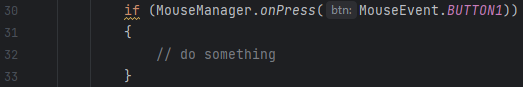

Arkito’s Mouse Manager class statically handles all mouse inputs for you. This way, your game can access the Mouse Manager methods whenever and wherever you want. A mouse button has three states: idle, pressed, held, and released. If you are unfamiliar with the AWT MouseEvent library, please refer to Oracle’s documentation.
Check if a mouse button has been pressed with the onPress(MouseEvent) method or with the onPress(char) method. It’s recommended that MouseEvent.btnCode is used. Returns a boolean.
Check if a mouse button is being held with the isHeld(MouseEvent) method or with the isHeld(char) method. It’s recommended that MouseEvent.btnCode is used. Returns a boolean.
Check if a mouse button has been released with the onRelease(MouseEvent) method or with the onRelease(char) method. It’s recommended that MouseEvent.btnCode is used. Returns a boolean.
If the mouse button is neither pressed, held, nor released, all aforementioned methods will return a boolean of false.
Returns true if any mouse button is being held, pressed, or released. Returns false otherwise.
Returns true if any mouse button is being pressed. Returns false otherwise.
Generic Example (if statement is true if the left mouse button [BUTTON1] is pressed on mouse):
